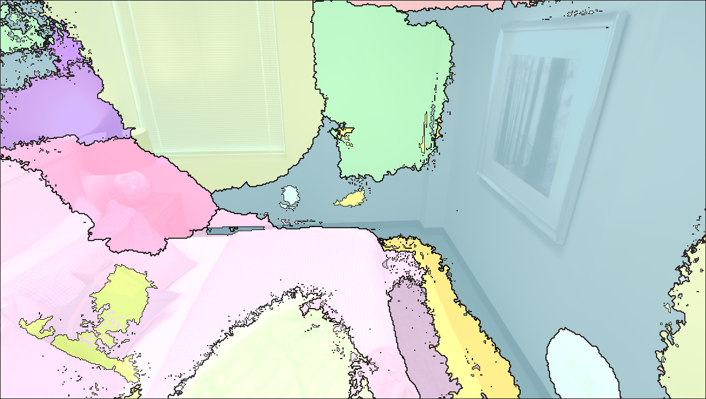
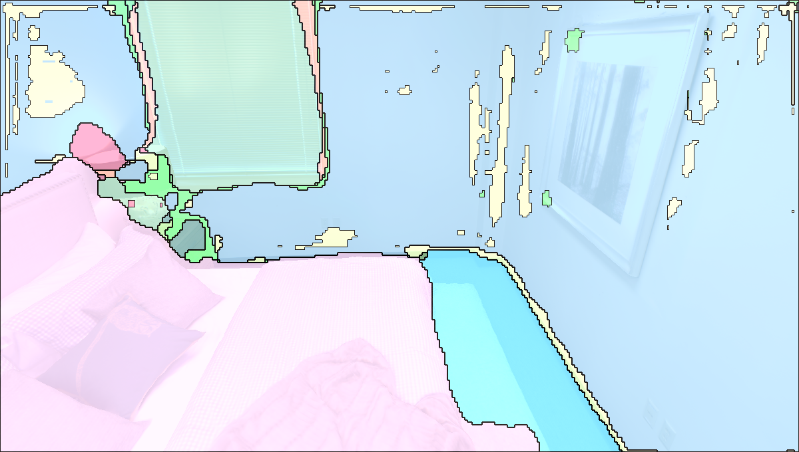
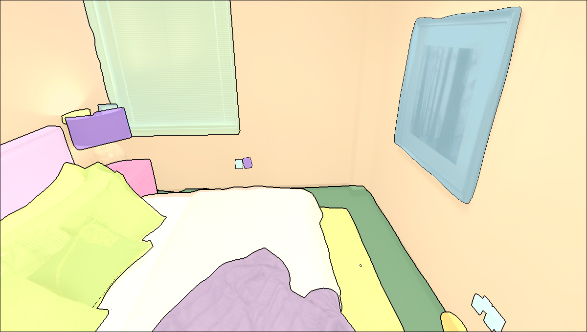
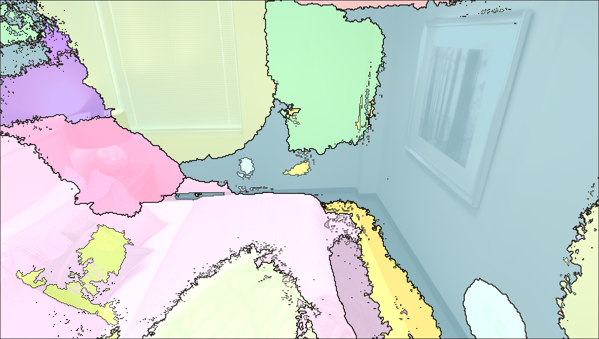
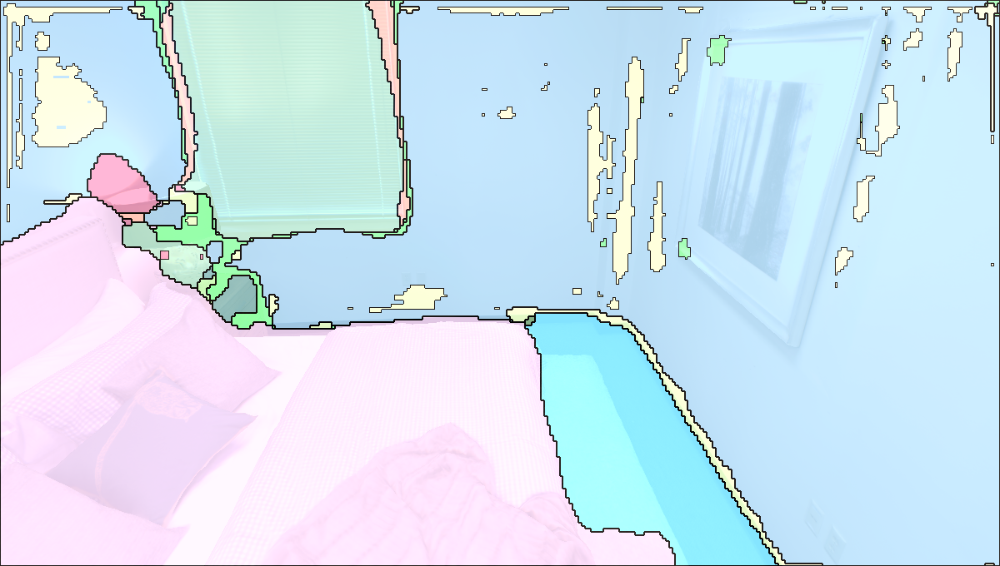
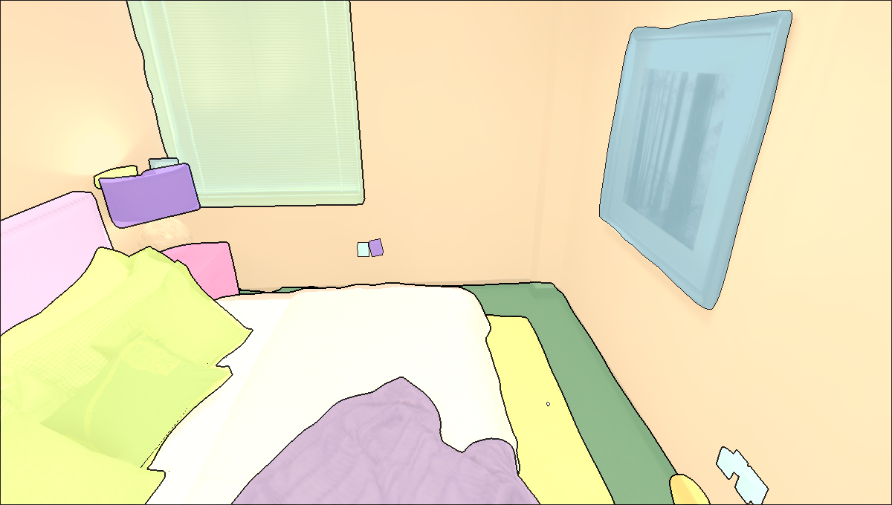

In recent years, there has been a surge of interest in open-vocabulary 3D scene reconstruction
facilitated by visual language models (VLMs), which showcase remarkable capabilities in open-set
retrieval. However, existing methods face some limitations: they either focus on learning point-wise
features, resulting in blurry semantic understanding, or solely tackle object-level reconstruction,
thereby overlooking the intricate details of the object's interior.
To address these challenges, we introduce OpenObj, an innovative approach to build open-vocabulary
object-level Neural Radiance Fields (NeRF) with fine-grained understanding. In essence, OpenObj
establishes a robust framework for efficient and watertight scene modeling and comprehension at
the object-level. Moreover, we incorporate part-level features into the neural fields, enabling a
nuanced representation of object interiors. This approach clearly captures object-level instances
while maintaining a fine-grained understanding.
The results on multiple datasets demonstrate that OpenObj achieves superior performance in zero-shot
semantic segmentation and retrieval tasks. Additionally, OpenObj supports real-world robotics tasks
at multiple scales, including global mobility and local manipulation.


 




